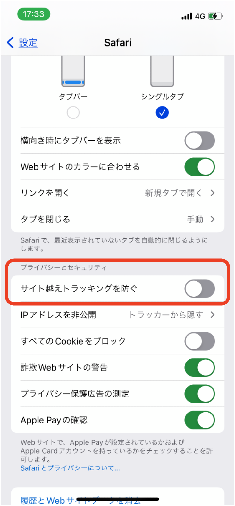

iOS15以降のSafariでカレンダーが表示されない事象について
2022年5月4日時点でiOS15でカレンダーが表示できない事象が発生しています。
以下の方法で表示できるようになります。
ご迷惑をおかけいたします。
-
方法1.ホーム画面→「設定」→「Safari」→「プライバシーとセキュリティ」→「サイト越えトラッキングを防ぐ」を無効にする。
 -
方法2.Safari以外のブラウザを使用する。